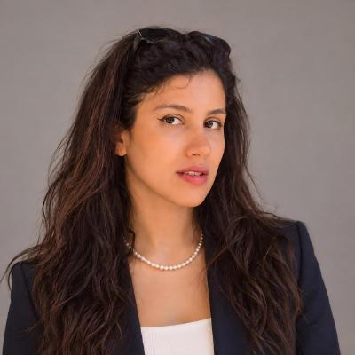

RPTU · BIOCHEMISTRY RESEARCH TEAM
Student Research Assistant
Supporting a biochemistry research team as a HiWi, with practical experience in gene expression-related work, culture preparation and stopped-flow measurements.
M.Sc. Chemistry · RPTU

Hello, I'm
Chemistry student at
RPTU Kaiserslautern-Landau
My chemistry journey began in Qom, Iran, and continues in Kaiserslautern, Germany. I am studying for a master's degree, with Reactivity, Catalysis and Sustainability as my main specialization module.
Alongside my studies, I have worked in water treatment and analysis and now support a biochemistry research team, connecting classroom learning with practical laboratory work.
A technical chemistry laboratory course, following a completed biochemistry laboratory course.
Kaiserslautern, Germany
Two research environments.
A growing practical foundation.
RPTU · BIOCHEMISTRY RESEARCH TEAM
Supporting a biochemistry research team as a HiWi, with practical experience in gene expression-related work, culture preparation and stopped-flow measurements.
WIR · WASSER INFRASTRUKTUR RESSOURCEN
Routine laboratory work in water treatment and analysis, with practical experience using TOC, DOC, IC, GC and rapid tests (Schnelltests).
My path through applied chemistry
and postgraduate study.
OCT 2024 — PRESENT
RPTU Kaiserslautern-Landau
Main specialization module: Reactivity, Catalysis and Sustainability.
Expected graduation · September 2027SEP 2017 — SEP 2021
University of Qom · Iran
Undergraduate studies in applied chemistry.
REVIEW ARTICLE · CO-AUTHOR · 2021
Journal of Molecular Liquids
Read the publicationDOI: 10.1016/j.molliq.2021.115668
For a conversation about chemistry, studies or laboratory experience, you can find me on LinkedIn.
Find me on GitHub ↗